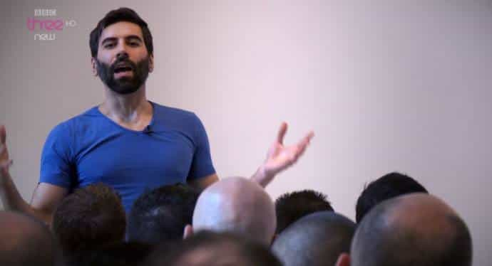

While the media is hyping up the stock market, the real insiders know the truth: we are destined for an incredible economic collapse, the likes of which we’ve never seen before. Our debt has surpassed $20 trillion dollars, our nation is in a state of incredible polarization thanks to Marxist identity politics, and our culture is a complete cesspool of degeneracy and sexual confusion.
Some have regained their hope after President Trump was elected, and while he’s certainly doing his best to circumnavigate the globalists and their plans to destroy America from within, it’s far better to be safe than sorry. I propose that every man must prepare for the worst possible scenario, which in all likelihood, could easily happen within the next 1-2 years. Here’s four ways that you can prepare for this upcoming catastrophe.
1. Invest In Alternative Assets
Very few people know this, but I assume that most red pill men are aware that the US dollar is backed by absolutely nothing—it’s literally just a cotton-paper composite. It’s not backed by silver, it’s not backed by grain or corn, and it hasn’t been backed by gold for decades. In other words, once people realize that the jig is up, they’ll scramble to get rid of their US dollars in favor of more valuable assets.
This will be a time of massive wealth transfer, but those who prepare will make out like bandits. The two assets which I urge you to invest in are physical metals and cryptocurrencies—predominantly silver and Bitcoin. Precious metals have historically grown 10x, 20x, even 100x in value when a country’s economy collapses, so investing in silver and gold now could end up making you a very wealthy man in the next few years to come.
The demand for silver has also steadily been increasing, while the production of silver has been decreasing. It’s a precious metal needed for all sorts of computer-related purposes, and when the economy crashes, not only will it be in extremely high demand due to its intrinsic value, but tech companies will be forking over money left and right to get their hands on the stuff while they still can.
As for cryptocurrencies, I advocate the purchasing of Bitcoin. While some men have expressed concerns over the “cashless society,” I’m not too worried. I advocate using silver and cash for in-person transactions, but when it comes to the internet, bitcoin is far superior to credit card—it’s anonymous, self-regulating, and can’t be taxed or controlled by a government.
We’ve already seen bitcoin grow from less than a penny to its all time high of nearly $5,000 in just a few short years—a $13 investment in Bitcoin when it first came out would now be worth over $7 million. While some have expressed concerns over its volatility, rest assured, it will change the world. Investing in Bitcoin in 2017 is essentially like investing in Google in 2004. Men, make no mistake: this will be the single greatest investment opportunity for the next 20 years, at least.
2. Prepare Yourself Physically
If Hillary had been elected, this would have been priority number one—but thanks to the efforts of the manosphere, and various alternative media outlets, President Trump was put into office. I have great confidence that he will be able to face the threats of antifa and other Soros-funded organizations, but it’s still absolutely necessary that you prepare yourself physically in the event of a crisis.
Start with the basics like Starting Strength or Stronglifts in order to build a good foundation. Beyond this, you can upgrade to my Body of an Alpha program for a discount (since you read ROK), or maybe try a variation of the PHUL workout. Dr. Layne Norton’s PHAT is also a phenomenal advanced workout routine, although it’s very rigorous and is not recommended for beginners. Another free program that you can try is the Daniel Craig Workout, which is great for beginners to intermediate level gym goers.
If you’re trying to lose weight, consider counting your calories or going into on ketosis by following the steak and eggs diet. If you’re trying to bulk up, utilize mass gainers, complex carbohydrates, and bodybuilding supplements. It’s really not that complicated, and has already been written about before.
In addition to this, consider taking Brazilian Jiu Jitsu in addition to a striking art such as Muai Thai or boxing. Purchase some basic “bug out bag” materials, such as a tent, canned food, and a gun. While I do not believe that you will need to resort to physical combat, it could still easily happen. So far President Trump has been doing a good job of dealing with antifa and other far left terrorist organizations, but things could change in a heartbeat if our good old pals in the Bilderberg group decide to up their funding.
3. Network, Network, Network
 There’s a reason why SJW’s and leftists tried so damn hard to shut down Roosh’s The State of Men tour—they understand that if men like us begin to network and organize, their anti-American agenda is toast. Liberals thrive by keeping conservatives apart from one another, and alienating us from other like-minded people. They understand that when they control the media, and make traditional men believe that they’re the only ones who think the way they do, it’s very difficult for them to take action.
As I’ve already discussed, however, there are far more men on our side than we believe—President Trump’s victory is evidence of this. Every single day I get emails from men all across the world, thanking me for writing what I write, and proclaiming their support for our traditionalist, masculine movement. Start going to activist organizations and expanding your social circle from there. Pro-Trump rallies, freedom of speech events, and the gym are great places to find men who you can side with.
The ROK and manosphere network is also a great one to surf through, and while it may be dangerous due to the number of SJW thought police lurking around every corner, it’ll be pretty damn hard to track you down if you use a fake name and a burner cell phone. Being a lone alpha some twenty years ago could work, but now the time has come for men to re-create their dominance hierarchies and reclaim the west.
Summary
In short, the chances of a massive economic collapse that renders our society destroyed is not extremely likely, although it’s quite plausible that it could happen within the next few years. Even if our society isn’t decimated like Venezuela or Zimbabwe, we will at least experience a massive economic crash over the next year or two. While President Trump has certainly tried his best to circumnavigate this impending doom, the globalist elites and the (((federal reserve))) are intent on destroying this country from within.
It’s incredibly important, for both you and your family’s sake, that you prepare yourself accordingly. Allocate a large portion of your investments into silver, gold, Bitcoin, and Ethereum—when the shit hits the fan, these assets will explode in value. Spend some time training, which you should already be doing. Take up classes at a local boxing gym, because even having a rudimentary knowledge of fighting will prepare you fairly well for a fight.
Lastly, start networking with other like-minded men, because they’re the ones who will truly help you out if things go south. Reach out to old friends, connect with new ones, and become active within pro-Trump circles in order to weather this upcoming storm. If you play your cards right, you could be a hell of a lot better off after it passes than before.
Learn the secrets to building the sexy physique that women want, that will make them desperate to sleep with you! On sale for ROK readers only!
Read More: How to Prepare For Your First Triathlon